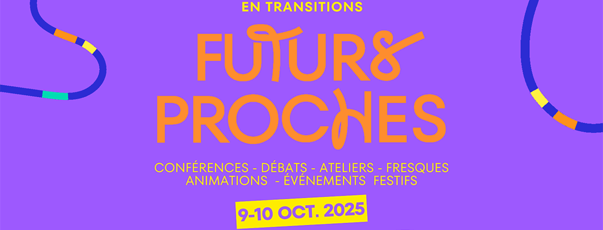

Festival Futurs Proches 2025

"Festival Futurs Proches", or Near Futures Festival in English, is a festival organised by universities in Toulouse that explores the challenges of environmental and societal transitions. During the festival, I participated in two activities, a discussion called "Social Justice and Climate Justice : Are they the same battle?" as well as a talk entitled "Remaking the Future : Taking the Future into Our Own Hands.. Through Reading Comics".
Social Justice and Climate Justice : Are they the Same Battle?
During this discussion, I learned a lot about the unequal impacts and responsibilities surrounding climate change. I realized that high-income individuals and wealthy nations bear a disproportionate share of responsibility when it comes to greenhouse gas emissions through their energy-intensive lifestyles, private transport and investments in polluting industries. Meanwhile, many countries and populations in the Global South, who contribute far less, are the most vulnerable to climate impacts. For instance, while the wealthy monopolise urban green spaces, extreme events such as Hurricane Katrina disproportionately affect poorer populations who may not have the means to shelter themselves.
The discussion also highlighted that while we have the technologies to reduce emissions and mitigate climate change, political agreement and fair implementation are major hurdles. Overall, I left with a deeper understanding of the need for climate actions that are both effective and just, taking into account responsibility, vulnerability and global equity.
Remaking the Future : Taking the Future into Our Own Hands ... Through Reading Comics
Stories have always been reflection of humanity, shedding light unto our feelings, hopes and fears. Today, fiction, more specifically comic books, has become a unique medium for questioning our future in the face of technological change.
Through three works, M, le Bord de l'Abime, Bug by Enki Bilal, and Les Furtifs by Alain Damasio, this talk explores the tensions between autonomy and technological dependence.
Werber envisions a failing humanity absorbed by transhumanism. Bilal portrays a collapsing society, paralyzed by its distrust of technology whereas Damasio sketches a future of rediscovery, where humans regain their creative power through reconnection with the living world.
These stories remind us that our future is not yet written, and that our imagination remains our greatest strength to envision new possibilities in order to become the authors of our own destiny in face of rapid technological advancement.